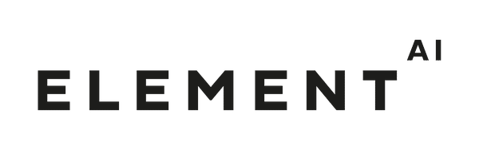
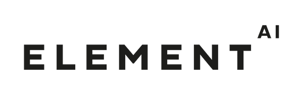

We're a team of neuroscientists, medical professionals,
computer scientists, entrepreneurs but most importantly firm
believers in the idea of challenging the status quo to deliver
exponential gains to our species, driven by data, grounded in
research.
Our team has had past success with our foray into neurotechnology
where we built "The Thinking Cap", a truly adaptive learning
system that used neuro feedback and machine learning to improve
habit formation. We won the Consumer Grand Challenge award at the
NeuroTechX competition that invited participation from top
universities across Eastern Canada.


Using the most cutting-edge machine learning techniques combined with
the best in class research and evaluation measures, we’re building
aifred as a solution firmly grounded in science that delivers value
to doctors.
More specifically we use fully connected layers in a deep neural
network along with sensitivity, specificity, Positive Predictive
Value, Negative Predictive Value, and ROC curves to test each
iteration of the AI system.


The aifred solution will help to deliver exponential gains to both doctors and
patients. The aifred solution will be a trusted advisor to the doctor aiding them
in making faster and more effective clinical decisions while patients
will benefit tremendously from reduced recovery times and enhanced
outcomes from their prescribed treatments.
Adequate access to healthcare while maintaining a high-level of
personalized care, not only in diagnoses but also in prescribing
medications and treatment, are grand challenges we face as the
population increases and life expectancy rises in all parts of the
world. This problem is exacerbated in developing nations that have
until now been unable to address mental health issues in an adequate
manner.


The aifred solution combines deep research with innovative technical approaches to
help increase treatment efficacy in the field of psychiatry - we help
reduce recovery times, increase treatment efficacy and allow better
allocation of medical resources through more efficient treatment
plans.
The purpose of aifred is to aggregate the patient’s health data
(including past visits) along with the pathology, treatment and
treatment dosage identified by the healthcare provider, in order to
output a percentage value for the predicted treatment efficacy for
that given patient. The common outcome measures will be clinical
improvement, as measured by validated rating scales and functional
assessments, and patient recovery times.


 
